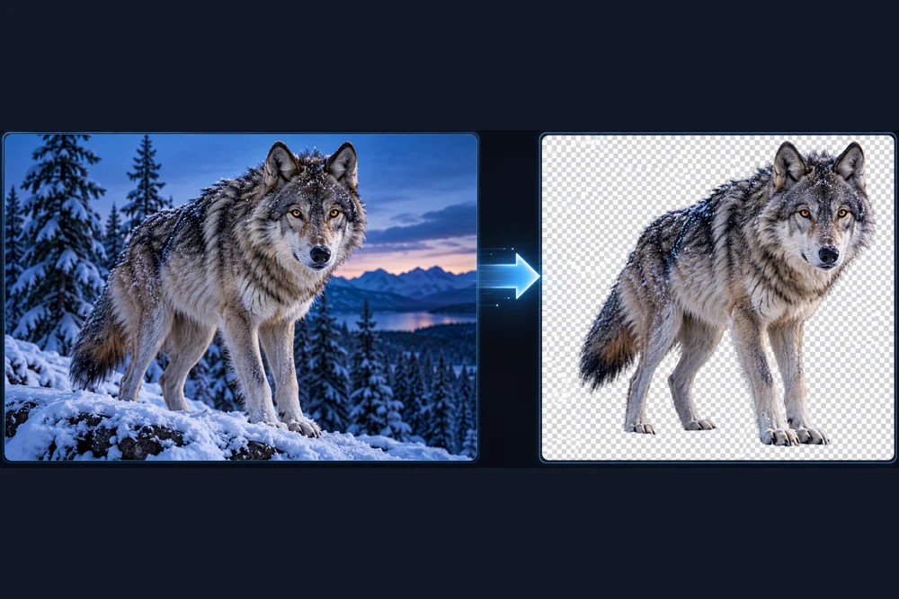
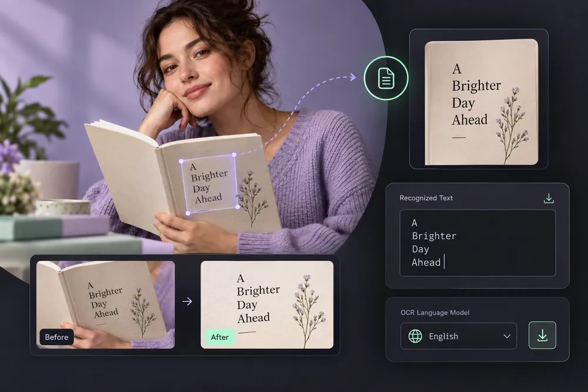

Image Utilities
Image UtilitiesImage Converter
Convert images between PNG, JPEG and WebP formats.
On your deviceLOOX UTILITIES
Convert supported image and media formats, extract file contents and use practical file conversion utilities.
18 tools
Image UtilitiesConvert images between PNG, JPEG and WebP formats.
On your device Video Utilities
Video UtilitiesTurn video clips into animated GIFs with custom settings.
On your device Audio Utilities
Audio UtilitiesExtract audio tracks from your video files.
On your device PDF & Documents
PDF & DocumentsCombine JPG and PNG images into a multi-page PDF.
On your device Image Utilities
Image UtilitiesWrite print-density metadata without pretending to add image detail.
On your device Image Utilities
Image UtilitiesConvert your PNG source into a separate downloadable image.
On your device
Image UtilitiesConvert your JPG source into a separate downloadable image.
On your device Image Utilities
Image UtilitiesConvert your JPG source into a separate downloadable image.
On your device Image Utilities
Image UtilitiesConvert your WebP source into a separate downloadable image.
On your device Image Utilities
Image UtilitiesConvert your WebP source into a separate downloadable image.
On your device Image Utilities
Image UtilitiesConvert your HEIC source into a separate downloadable image.
On your device Image Utilities
Image UtilitiesConvert your HEIC source into a separate downloadable image.
On your device Image Utilities
Image UtilitiesConvert your AVIF source into a separate downloadable image.
On your device Image Utilities
Image UtilitiesConvert your AVIF source into a separate downloadable image.
On your device Image Utilities
Image UtilitiesConvert your SVG source into a separate downloadable image.
On your device Image Utilities
Image UtilitiesConvert your BMP / TIFF Converter source into a separate downloadable image.
On your device Image Utilities
Image UtilitiesRender selected PDF pages into individual high-resolution JPEG images.
On your device
AI ToolsRecognize printed text locally with downloadable OCR language models.
Cloud processingNo tools match this search. Try a shorter phrase or explore another category.
Convert supported image and media formats, extract file contents and use practical file conversion utilities. Open a tool to see its supported formats and controls. Tools marked “On your device” process locally; cloud features require a connection and may require a LOOX account. Upcoming tools remain separate from the available collection.
Browse the complete LOOX toolkit